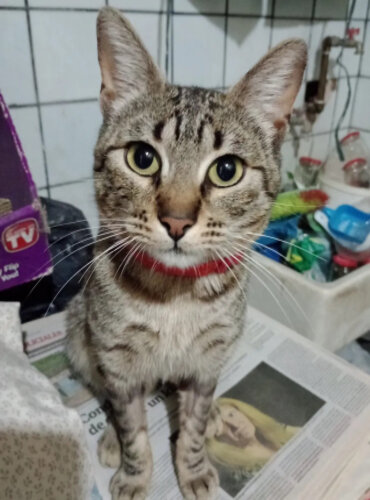
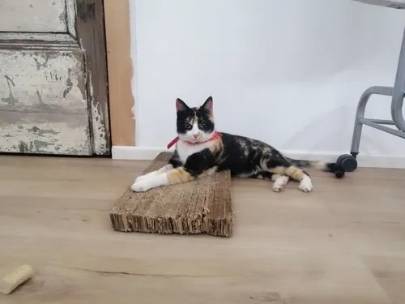

Paw Tips
Consejos para cuidar a tus mascotas

Visitas regulares al veterinario
Vacunas: Mantén al día el calendario de vacunación para proteger a tu mascota de enfermedades.
Desparasitación: Realiza desparasitaciones internas y externas de forma regular.
Revisiones: Llévalo a chequeos periódicos para detectar cualquier problema de salud a tiempo.

Alimentación equilibrada
Comida de calidad: Elige alimentos que sean adecuados para su edad, raza y estado de salud.
Agua fresca: Asegúrate de que siempre tenga agua limpia y fresca a su disposición.
Evita los alimentos tóxicos: Investiga qué alimentos son peligrosos para tu mascota y mantenlos fuera de su alcance.